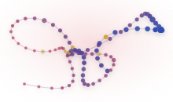
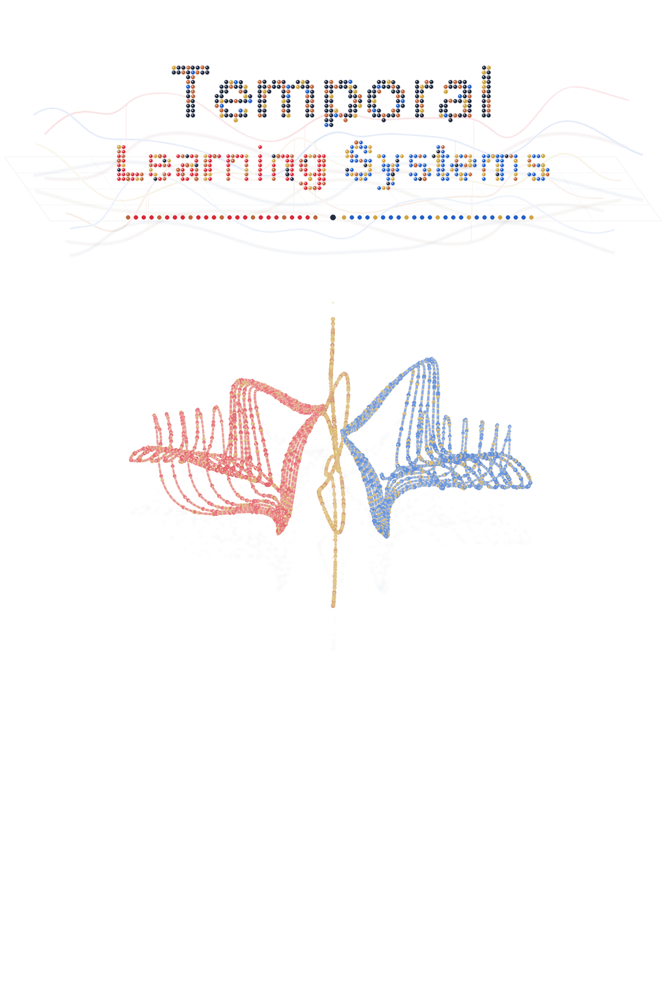
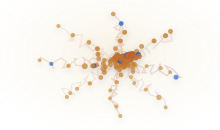
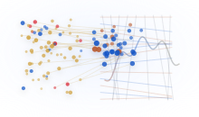
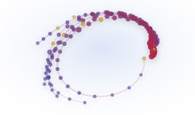
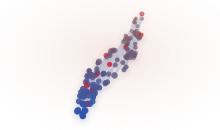
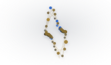

Reinforcement Learning
Adaptive decision-making for agents that learn from delayed feedback.

Reinforcement learning · stochastic optimization · scalable AI · multi-agent AI
Indian Institute of Technology Tirupati
Learning systems that reason across time, scale across data, coordinate across agents, and adapt under uncertainty.
Research focus

Adaptive decision-making for agents that learn from delayed feedback.

Algorithms for noisy objectives, uncertainty, and robust learning.

Sketching, compression, and randomized representations for learning at scale.

Coordination, competition, cooperation, and collective behavior.

Protocols and representations that arise between learning agents.

Temporal models and learning methods for clinical decision support.
People
Directions
How do agents learn useful temporal abstractions?
What optimization principles survive stochastic feedback and nonstationarity?
When does communication emerge as a useful computational strategy?
How can learning systems support high-stakes medical decisions?